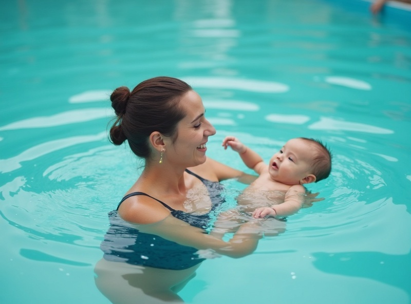
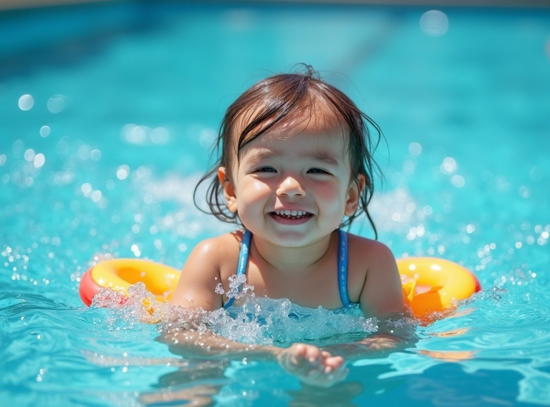
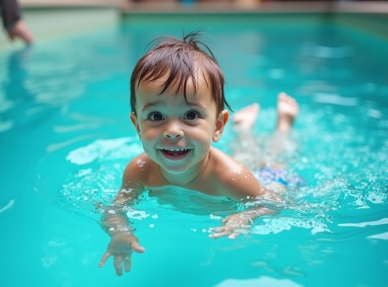
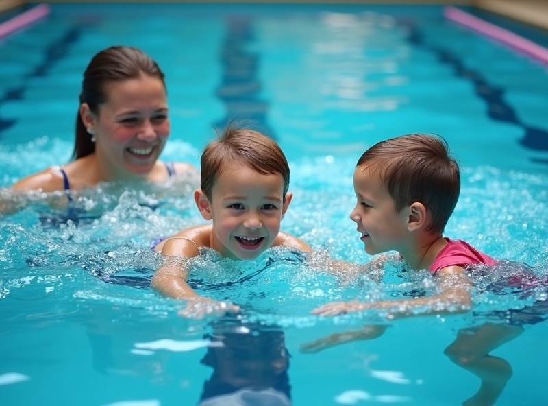

Every child develops at their own pace. Our programs meet them exactly where they are—from water safety basics for infants to stroke development for preschoolers.
Our certified instructors use play-based learning and positive reinforcement to create a safe, fun environment where children thrive.
Our infant program focuses on creating positive water experiences through parent-child interaction while introducing essential safety skills.

Toddlers learn breath control, floating, and basic propulsion through play-based learning.

Children begin moving through water independently while developing coordination, stamina, and stronger water confidence.

Preschoolers refine swimming technique, learning proper strokes, breathing patterns, and advanced water safety.

Every instructor is certified in water safety and CPR. We maintain small class sizes and follow strict safety protocols.
All instructors hold certifications in water safety, CPR, and first aid with years of teaching experience.
Maximum four students per instructor ensures personalized attention.
Medical notes, allergies, and special needs are tracked securely for each child.
Book a free trial lesson and see how our programs build confidence and essential swimming skills.